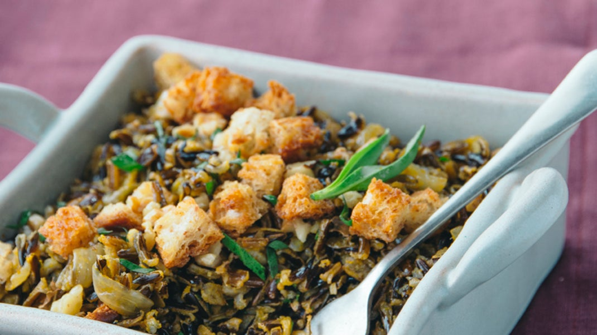

Go back to main page
Wild Rice and Sage Stuffing

Toasted bread croutons add a bread-stuffing texture to seasoned wild rice.
Ingredients
- 1/2 cup coarsely chopped walnuts
- 8 slices whole-grain gluten-free bread, cut into 1/2-inch cubes
- 4 1/2 Tbs. olive oil, divided
- 1/4 tsp. salt
- 1/4 tsp. freshly ground black pepper
- 1 large white onion, diced (2 cups)
- 1 clove garlic minced (1 tsp.)
- 4 cups low-sodium vegatable broth
- 2 cups wild rice
- 1 tsp. finely chopped fresh tarragon
- 1 tsp. chopped fresh sage
Preparation
- Preheat oven to 375°F. Coat 8-inch-square baking dish with cooking spray.
- Toast walnuts in dry skillet over medium heat 5 minutes, or until fragrant, shaking skillet often. Set aside.
- Toss bread cubes with 21/2 Tbs. oil, salt, and pepper in bowl. Transfer to baking sheet, and bake 12 to 14 minutes, or until golden brown. Set aside, and keep oven on.
- Heat remaining 2 Tbs. oil in large saucepan over medium heat. Add onion, and cook 12 minutes, or until soft and translucent. Add garlic, and sauté 2 minutes. Add broth, and bring to a boil. Stir in wild rice, and return to a boil. Cover, reduce heat to medium-low, and simmer 40 minutes. Stir in toasted walnuts, and simmer, covered, 10 minutes more. Remove from heat, and season with salt and pepper, if desired.
- Spread in prepared baking dish, and bake 10 to 20 minutes, or until beginning to brown and crisp on top. Serve sprinkled with croutons, sage and tarragon.